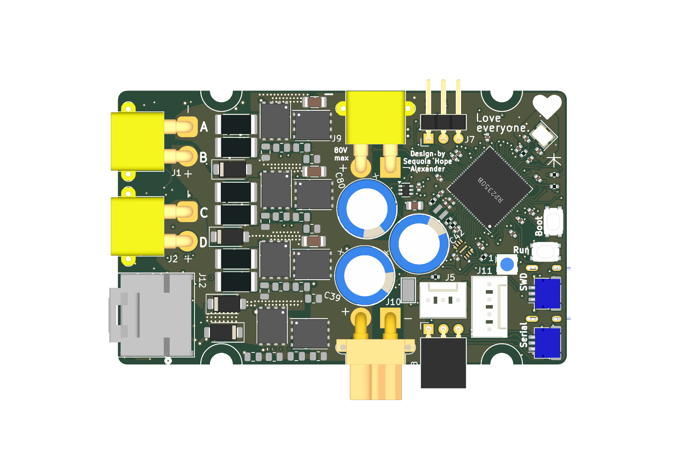

RP2350 Motor Controller — Review Hub
Running design-review notes for the rp2350-motor-controller project · developer feedback, rich detail in the sub-pages

Schematic Review →
Encoder port deep-dive: why single-ended fails (termination vs bias, with the math), three fix options incl. the switched-termination design; TVS voltage-rating findings; full board + firmware pass.
2026-08-08
PCB Review & "Energy Field" Spread →
Layout vitals, courtyard clearance census (270 pairs under 0.25 mm), DRC truths, and a working relaxation prototype that jiggles the board apart — with the four new termination switches placed.
2026-08-08
Status 2026-08-08: all review fixes applied on branch
rev-b-fixes
(9 commits: schematic, board, firmware, docs). See the
rev-B section for the re-route worklist before ordering.
Current top items
- HIGH Encoder single-ended support: 100 Ω termination swamps the bias divider (±32 mV vs −100 mV threshold). Fix: switched termination on GPIO38/TP20 + P-side pull-ups (details). Field fix for built boards: R86–R93 → 560 Ω.
- HIGH Phase TVS (SMAJ51A, 51 V standoff) contradicts the 60 V rating; bus TVS clamps above the 80 V FETs (details).
- MED All analog-switch / transceiver enable lines float at boot — add pull-downs (details).
- MED Whole-board jiggle = 61% of tracks re-routed; do cluster-scoped shakes instead, starting with the encoder corner where the new switches land (details).